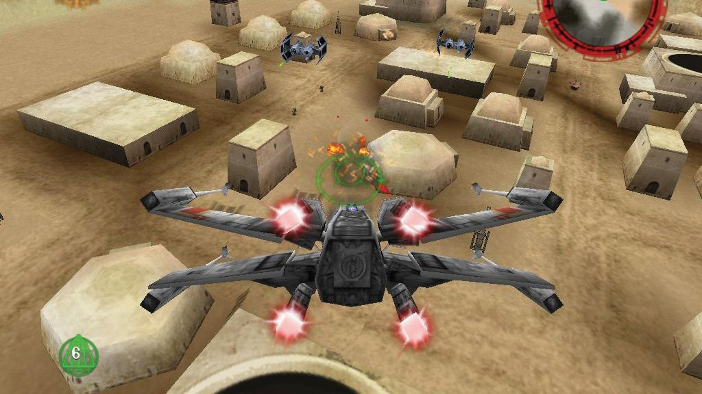

SETTING
Star Wars: Rogue Squadron is set in the fictional Star Wars galaxy, where a war is fought between the Galactic Empire and the Rebel Alliance. The game's first fifteen levels occur six months after the Battle of Yavin—as depicted in A New Hope—and before the events of The Empire Strikes Back. As the Empire gathers strength for an all-out assault on the Rebel forces, Luke Skywalker and Wedge Antilles form Rogue Squadron, a group comprising twelve of the most skilled X-wing pilots from the Rebel Alliance.
The sixteenth and final level of the game takes place during Dark Empire, six years after Return of the Jedi's Battle of Endor. The Rebel Alliance has established the New Republic, which now controls three quarters of the galaxy. After the deaths of Emperor Palpatine and Darth Vader, the Galactic Empire collapsed, but was reborn under a mysterious new leader (who is actually a clone of Palpatine). Rogue Squadron, now under the command of Wedge Antilles, continues to fight the Empire to protect the newly formed Republic.

The story is divided into four chapters, each of which starts with an opening crawl resembling those featured in the Star Wars films. Further story details are presented through the game's instruction manual, pre-mission briefings, character conversations during the game and in-game cutscenes. The game begins with Rogue Squadron briefly encountering the Empire at the Mos Eisley spaceport on Tatooine. The team then executes escort and rescue missions on Barkhesh and Chorax, respectively.
The Rebels learn that Imperial officer Crix Madine wishes to defect to the Rebel Alliance. The Empire launches an attack on Corellia, where Madine is stationed, to prevent his departure. Rogue Squadron, with the help of Han Solo and Chewbacca in the Millennium Falcon, fights off the Empire and helps escort Madine safely off the planet. Soon after, Rogue Squadron is joined by Gold Squadron, a group of Y-wings now led by Crix Madine; they are dispatched to the moon of Gerrard V to aid its quest for independence from the Empire.
They encounter the 128th TIE interceptor Squadron and disable Kasan Moor's TIE. When Rogue Squadron tells Moor that she has been taken prisoner, she offers to defect and provide the Rebel Alliance with Imperial intelligence.
With the help of Kasan Moor's intelligence, the Alliance launches three consecutive attacks on Imperial bases throughout the galaxy. After an assault on the Imperial Enclave, a facility on Kile II supporting the Empire's Naval operations, Wedge Antilles is ambushed by a group of TIEs and is taken captive. The Rebel Alliance tracks Wedge to an Imperial prison complex on the planet of Kessel. The remaining members of Rogue Squadron travel to Kessel and rescue him and other Rebel prisoners.
With Wedge Antilles free and Rogue Squadron again at full strength, the Rebel Alliance turns its attention to a new Imperial threat — Moff Kohl Seerdon. Seerdon is consolidating Imperial power in preparation for an attack aimed at capturing Thyferra, a planet that produces the healing substance bacta. Rogue Squadron is ordered to disrupt his operation with hit-and-run missions against key targets on Taloraan and Fest. In retaliation, Seerdon attacks and holds a city on the planet of Chandrila hostage. Rogue Squadron and the Alliance strike back by initiating a Kasan Moor-engineered raid on an Imperial base located inside a volcano on Sullust. While still on Sullust, however, General Rieekan informs the Squadron that Moff Seerdon has used their raid as a diversion and begun his attack on Thyferra. With Seerdon in control of the planet's bacta and their own supply threatened, Rogue Squadron quickly reaches Thyferra, kills Seerdon and frees the planet.
In the final chapter, the game moves into the future, six years after the Battle of Endor. Rogue Squadron, now under the command of Wedge Antilles, continues to fight the wounded Empire. On the planet of Mon Calamari, new Imperial weapons called World Devastators are destroying the planet. Rogue Squadron is deployed, disables all three Devastators and destroys the Imperial presence.